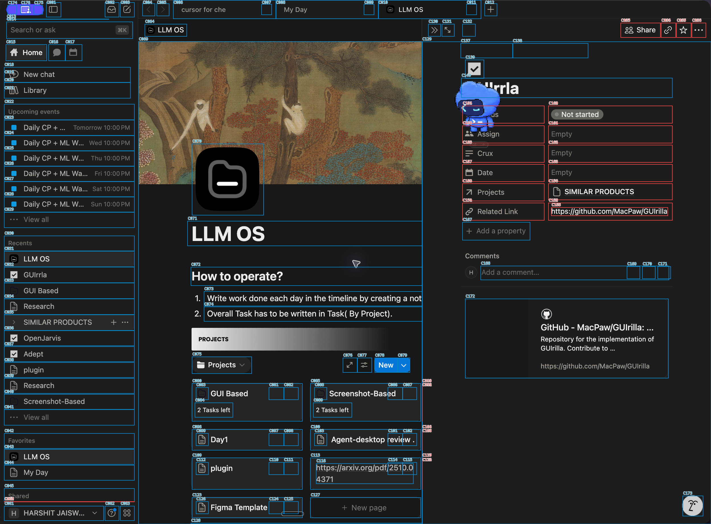

Notion
717 projected nodes → 504 entities; 176 control candidates; 66 with unresolved overlaps.
Capture: blocked ['capture_time_skew', 'visible_AX_changed_during_capture', 'AX_changed_without_visible_stability_check']

Notion live test: existing LLM OS page and open side peek. Same ax-entities-v1 rules; depth 30 after depth 14 left 11 frontiers. Guarded screen-region image, not an isolated window image. No accuracy ground truth.
No per-app box edits. The algorithm preserves every projected node, coalesces only compatible nested nodes, retains context, and flags unresolved control overlaps. Raw layers remain available. This is a diagnostic, not proof of universal reliability.
717 projected nodes → 504 entities; 176 control candidates; 66 with unresolved overlaps.
Capture: blocked ['capture_time_skew', 'visible_AX_changed_during_capture', 'AX_changed_without_visible_stability_check']
